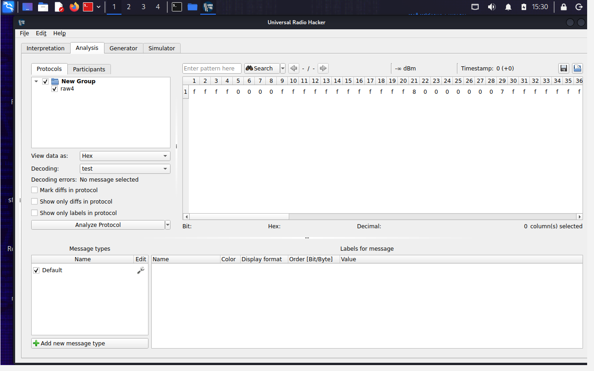
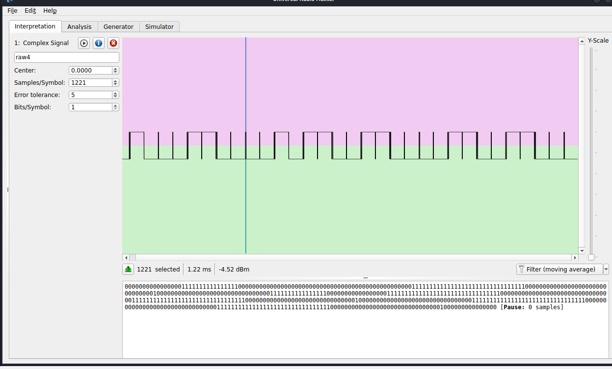
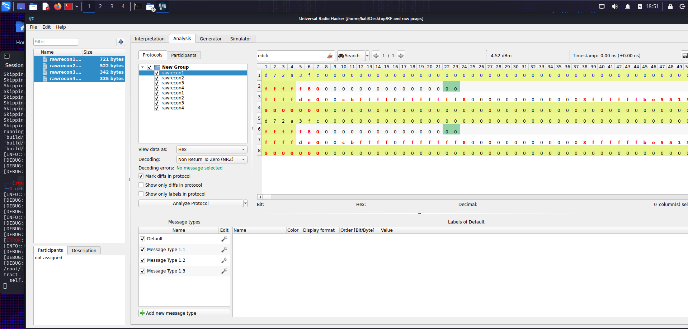
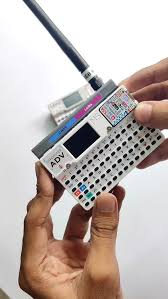
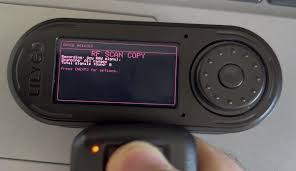
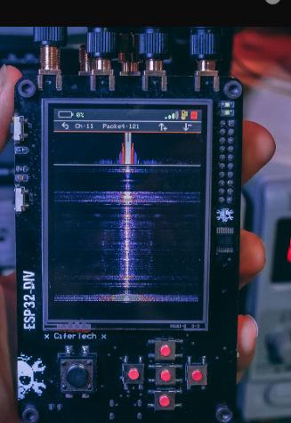
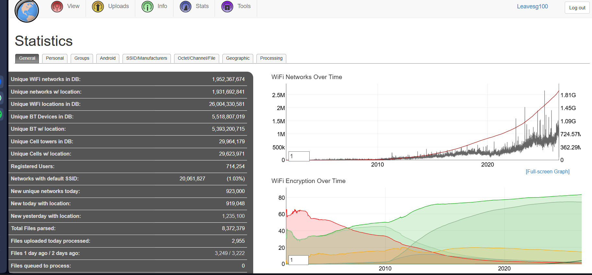
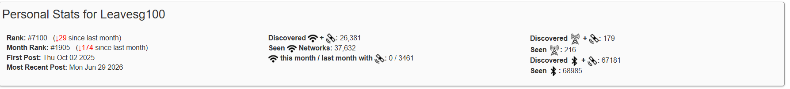

Wireless analysis, sub-GHz signal review, and controlled application security labs.
> Mission Dashboard
Current operator status, evidence routes, and fast access to the strongest portfolio areas.
active lab
URH-assisted packet comparison with rolling-code behavior documented.
Hardware gallery, RF audio conversion, wardriving screenshots, and video lab route.
Try terminal commands: reports, tools, contact,
open videos.
> Live Terminal Console
Type 'help' to see system flags. Try 'hack' or 'ctf' to test security controls.
Pentest Sandbox
online
Session initiated. Welcome back, agent.
> About Me
Welcome to my security portfolio. I focus on web application testing, network assessment, RF analysis, field reconnaissance, and vulnerability research. The work below is framed as controlled, legal, evidence-led security practice.
> Technical Skills
> Armed Toolkit & Weaponry
Operational proficiency profiles across standard industry security frameworks:
[+] Network & Infrastructure
Nmap (Network Discovery)95%
Metasploit Framework85%
[+] Web Application Security
M5Stack Core2 (EvilM5 Platform)85%
Burp Suite Professional90%
OWASP ZAP / Dirsearch80%
[+] Radio Hacking & SDR


LilyGO C1011 / T-Display (Bruce)75%
Universal Radio Hacker (URH)75%
GQRX / HackRF Tools70%
RF Signal Observations
| Signal | Source | Observed Frequency | Characteristics |
|---|---|---|---|
| Jammer 1 | LilyGO C1101 (Bruce) | ~890 MHz | Clean, low-power; consistent binary output. |
| Jammer 2 | ESP32-DIV 2 | ~890 MHz (Estimated) | High-noise, square-wave, dense signal patterns. |
| Signal 3 | Unknown Smart Doorbell | ~430 MHz | Clean, repeating patterns; high signal integrity. |
RF Recon Analysis: Sub-GHz Protocol Reverse Engineering

1. Executive Summary
This report documents the ongoing reverse-engineering process of an unidentified sub-GHz IoT device captured via the M5Stack Cardputer. The analysis was conducted using Universal Radio Hacker (URH) to demystify packet structure, modulation, and cryptographic properties.
2. Methodology
- Data Collection: Raw sub-GHz signals were captured in the field using the M5Stack Cardputer.
- Preprocessing: Captured files were imported into URH, where the Samples/Symbol and Threshold settings were calibrated to align the raw waveform with digital logic.
- Comparative Analysis: Multiple captures were grouped and processed using the Mark Diffs functionality to isolate static identifiers from dynamic payloads.
3. Technical Findings
- Protocol Classification: The signal was identified as a Rolling Code (Dynamic) Protocol. This conclusion is based on the observation that the entire packet structure exhibits bit-level variations across consecutive captures, indicating the presence of a sequence counter and encrypted payload.
- Packet Structure: The identified sequence (
d7 2aored cf) acts as the synchronization layer, signaling the receiver to initiate message processing. - Payload Dynamics: Comparison across multiple signals confirms that the protocol does not utilize static identification for the data transmission, necessitating cryptographic analysis for further deconstruction.
4. Observed Limitations
- The Mark Diffs tool highlighted the entire packet as variable, which precludes a simple replay attack.
- Current analysis indicates that the sequence counter and command data are likely encapsulated within an encrypted block, preventing immediate human-readable decoding without the underlying algorithm or master key.
RF Key Fob Signal: Audible Pitch Conversion
Raw RF key fob signal captured at ~433 MHz, converted and transposed to audible frequency range for pattern analysis and acoustic signature documentation. This audio representation reveals the underlying modulation structure and timing patterns that would otherwise be invisible to human perception.
!cat secret!
[+] Physical Field Gear


M5Stack Cardputer90%
Proxmark3 (RFID Cloning)85%
Flipper Zero / BadUSB Scripts90%
New Device Inbound: ESP32-DIV Reconnaissance Platform

A new ESP32-DIV device is currently inbound, featuring enhanced recon capabilities for C1101 WiFi, Bluetooth, NF24 signals, and beyond. The DIV 2 variant was acquired but exhibits several firmware limitations: touch screen lag, off-target touch responsiveness, and broken SD card saving functionality. However, the DIV 1 platform supports installation of Hale Hound firmware, which provides critical bug fixes and signal amplification capabilities, making it the superior choice for sustained field operations.
> Wardriving
Wardriving captures, mapping, and signal reconnaissance with WiGLE integration and documented local scans.
This section documents recent wardriving activity, including signal mapping and GPS-tagged network discoveries. The badge below links to WiGLE, the wireless network mapping service used to visualize collected SSIDs, BSSIDs, and radio locations.

Wardriving Findings
Scanned local streets and parking areas for exposed wireless networks, recording both 2.4GHz and 5GHz SSIDs. The collected captures were later analyzed for weak security settings, open guest networks, and suspicious unauthorized access points.

Wardriving route capture with GPS annotation.

Detected wireless networks and channel heatmap.
> Operations Directory Logs
[+] Tactical Briefing: Select an operation module profile below to review text logs and engineering briefs across different engagement disciplines:
[Field Operation] Investigation of Anomalous Rogue AP Network
Detecting, profiling, and analyzing a hostile, evasive wireless access point in a public transit sector.
[+] Field Intel Summary:
1. Pyle Train Station Reconnaissance
Probing conducted via mobile device hardened with an always-on VPN layer. Connection to the gateway routed traffic to a simplified captive portal login page. Fake credentials returned immediate submission failures, indicating credential harvesting hooks.
2. Hardware Reconnaissance & RF Auditing
Deployed an M5Stack Cardputer running EvilM5 / Bruce firmware alongside a LilyGO T-Display-S3 running Bruce firmware to map infrastructure. Confirmed isolated topology with 0 other connected hosts; port sweeps returned closed/filtered states.
3. Threat Actor Evasion Profiles
MAC profiling points toward a weaponized Hak5 Wi-Fi Pineapple or custom ESP32 rogue framework. The node initiates automated targeted deauthentication frames to forcibly disconnect audit devices within a 3-minute window, followed by a total SSID dormancy cycle until the next day.
4. REPORT ENDED
Deployed an M5Stack Cardputer running EvilM5 / Bruce firmware alongside a LilyGO After heavy reconnaissance on this AP, I have decided to cease operations until better field devices can be obtained. The login mechanism for this device is too flimsy for credential harvesting. Even though this is a high-traffic area for potential victims, it is not worth reporting, as most who need internet are utilizing mobile data, which is the superior option in this case. AP rogue ending report for now!.
[Field Operation] Detection & Profiling of Rogue Wireless Surveillance Assets
Locating and intercepting unmapped, hidden covert IP cameras utilizing hardware RF sweeps.
[+] Covert Reconnaissance Briefing:
1. Signature Profiling & Hardware Limitations
Isolated an anomalous wireless signature near Pyle Asda. Probed using an M5Stack Cardputer running EvilM5. The device struggled to maintain a consistent lock due to the target's low duty cycle and aggressive power-saving sleep configurations, heavily pointing to an A9-style micro-spycam architecture.
2. Traffic Analysis & Verification
By shifting to scan for hidden ad-hoc infrastructure networks, the node footprint was isolated. The device continuously broadcasts status frames over the 2.4GHz spectrum, waiting for a localized receiver application to pull video feeds.
[bWAPP] Web App Vulnerability Lab
Demonstrating denial-of-service vectors and system breaches on local bWAPP servers.
[+] Exploitation Log Summary:
Successfully executed localized application layer stress assessments, profiling threshold constraints, session token vulnerabilities, and authentication bypass behaviors inside unhardened testing sandboxes.
[PCAP] Phase 1 & 2 Network Analysis
Analyzing network captures to isolate command-and-control communication channels.
[+] Forensics Packet Brief:
Filtered traffic strings to trace malicious reverse-shell network hooks. Isolated obfuscated TCP payload handshakes communicating outwards to an unmapped, external listening gateway server.
> CTFs & Exploitation Video Gallery
The video gallery has moved to /videos.
Visual documentation of operational equipment and hardware assets. Click any image to enlarge.

LEAFOSEC Logo
M5Stack Cardputer
LilyGO T-Display (Bruce)
M5Stack Core2 (EvilM5)
Radio Hacking Hardware Unit 1
Radio Hacking Hardware Unit 2
RF Recon Analysis: Sub-GHz Protocol
ESP32-DIV Reconnaissance Platform